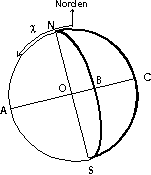

INOFFIZIELLES
DRUCKFEHLERVERZEICHNIS
FÜR DIE
"ZWEITE, DURCHGESEHENE AUFLAGE"
DER
ASTRONOMISCHEN ALGORITHMEN
VON
JEAN MEEUS
ERSCHIENEN BEI
JOHANN AMBROSIUS BARTH,
LEIPZIG, BERLIN, HEIDELBERG 1994
Diese Liste entstand während meiner Arbeit an dem
Astronomie-Programmpaket Urania/48 für
den Hewlett-Packard Taschenrechner HP48 durch Vergleich mit der
amerikanischen Originalausgabe dieses großartigen Buches. Es ist
unendlich bedauerlich, daß ein so wertvolles Buch offenbar durch
schlampiges Lektorat beinahe unbrauchbar gemacht wurde.
Einige der
aufgezählten Fehler sind lediglich kleine Formabweichungen, die
in einer zukünftigen 3., durchgesehenen und verbesserten
Auflage auch bereinigt werden könnten.
- Seite 33, 2. Abs.: ..., die zwischen den in der Tabelle ... [ statt ...denen... ]
- Seite 39, Formel 3.8b: statt ...+n^3((H+J)/24)... lies ...+n^3((H+J)/12)...
- Seite 40, Formeln nach 3.10: statt N=(H+K)/12 lies N=(H+J)/12
- Seite 41, Formel 3.11, Nenner: statt ..3Mno^2... lies ..3Nno^2
- Seite 44: Im Nenner der Formel für Li fehlt offensichtlich die erste Klammer
- Seite 87 unten: In der Formel für (Delta)T fehlt der Term ..+0,145932 * (Theta)^10 ..
- Seite 92: Am Ende der Seite ist der letzte Satz fortzusetzen mit: ..(klein-omega)*Rp pro Sekunde. Der Krümmungsradius des Erdmeridians an der Breite (Phi) ist [ Seitenende]
- Seite 100, Z.6 v.o.: lies: ..(epsilon)=23°26'21".448=23,4392911. Für B1950.0 haben wir (epsilon)=23°,4457889
- Seite 114, Text-Z.3 v.u.: .. geringen Höhen ...
- Seite 129 unten: Koordinaten v. Kastor: (alpha_1)=7h34m16s.40=113°,5683
- Seite 137 oben: lies: ... Eigenbewegung addieren, was eine jährliche...
oder: ..., womit sich ... ergibt. [mißverständliche Übersetzung]
- Seite 137, Abs. Besselsches u. Jul. Jahr, 2.Abs., 2. Z.v.u.: Statt J1984.0 lies: J1986.0
- Seite 141: Formel 20.6: Letzter Term für p (..-0",0000006 t^3): eine Null ist zu streichen!
- Seite 151 2. Liste, (1): Die Eigenbewegung des Sternes [...] Ausgenommen die Fälle [...] [Übersetzung?]
- Seite 155 Mitte: Die Nutationen [...] berechnet [...]
- Seite 162, Formel 23.3: sin i sin (Delta)(omega) = -sin (eta) sin((Omega_o) - (Pi))
sin i cos (Delta)(omega) = sin io cos (eta) - cos io sin (eta) cos((Omega_o) - (Pi))
- Seite 163, Mitte: lies: Daraus leiten wir ab: sin i = SQRT((A^2+B^2))..
- Seite 165, Mitte: lies: Dann haben wir [...] | cos((omega) - (omega_o)) = ... (kleiner Index!)
- Seite 179, Formel 25.2: X = R cos (beta) cos (Sonne)
- Seite 179, unten: Formel für B1950.0: Xo = 0.999925702634 X + 0.012189716217 Y + 0.000011134016 Z
- Seite 184, Bsp.26.a: JDE = 2437.38589 + 0.00635/0.9681
- Seite 185 oben: k=3 für das Dezembersolstitium
- Seite 219, Tabelle 30.1: Bahndaten f. Merkur: L.a3 = +0.000000018
- Seite 226 unten: der Fehler beträgt 100x2xSQRT(38)x10-8 rad = 2".54
- Seite 236, Formel 32.11: 1. Zähler: lies: (X+x)X ...
- Seite 244 oben: Zahl in Va = 29.7847
- Seite 244, Abschnitt Länge der Ellipse, 1. Abs.: lies: .. a ihre große Halbachse und b die kleine...[Ib soll wohl "Italic-b" geheißen haben!]
- Seite 261, Tab.35.1, Mars.Opposition.B = 779.936104
- Seite 270f, Tabelle 36.1: Nr 7: 0 / 1 / -1 ; Nr 39: 2 / 0 / 2
- Seite 272, 1. Formelblock: Jupiter: JDE=2455636.938 + 4332.897090k + 0.0001368k^2
- Seite 276, Mitte: ergänz. Satz zur mittl.Fehler: In Ausnahmefällen kann er bis zu 6 Stunden betragen.
- Seite 297 (9) W=11.504+350.89200025(JDE-(tau)-2433282.5)
- Seite 304, (13): (omega_2) = W2 - (zeta) - 5°.02626 * (Delta)
- Seite 307 unten: J = 66°.115 + 0°.9025179d - 0°.329 sin V
- Seite 339, oben: (lambda)=--- 133°.162659; (Delta)=385 000.56-16 590.875=368 409.685
- Seite 345: Abbildung 46.1 fehlt; sie sieht etwa so aus:

- Seite 349, Formel 47.5: lies: .. + 0.010 7438 T^2
- Seite 355, Formel 48.1: Letzter Term: + 0.000 000 0052 T^4
- Seite 358, Mitte, letzte Zeile d. Abs.: ...zwischen..
- Seite 362, Tab.48.2:
- ... (-0.629 + 0.0016 T ) (4D - M) (zusammenfassen!)
- ... +0.104 (2D + 2F)
- ... +0.104 (2D - 2M)
- Seite 375 vor Bsp 51.a: Der Winkel muß im ersten oder im vierten Quadranten liegen. ["zu" streichen!]
- Seite 377: Das letzte Wort (dann) ist zu streichen. [mißverständlich!]
- Seite 387, Bsp 52.c: Mondfinsternis vom Juni 1973.
- Seite 391: Sonne so=15'59''.63= 959''.63
- Seite 391 unten: lies: Später wurden folgende Werte angenommen...
- Seite 392, Mitte: s_p = s_e*SQRT(1-kcos^2(B)) (Index e)
Optische Korrekturen [Hinweise für die 3., durchgesehene und verbesserte Auflage]:
- Seite 264: Merkur: "Abendsichtbarkeit" ist einzuklammern
- Kap. 33, 53, 54: Die Kopfzeilen dieser Kapitel sind unüblich klein!
Dieses Verzeichnis erhebt (leider) keinen Anspruch auf Vollständigkeit! Angaben ohne Gewähr.
WEITERVERTEILUNG AN BESITZER DES BUCHES ERWÜNSCHT !!
6., nochmals erweiterte Fassung, WIEN, 5.10.1995
HTML-Version 24.9.1996
© Georg ZOTTI, 1996 - 09 - 24
{kind=link}